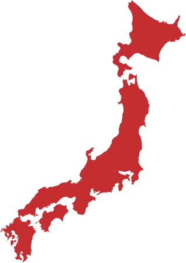
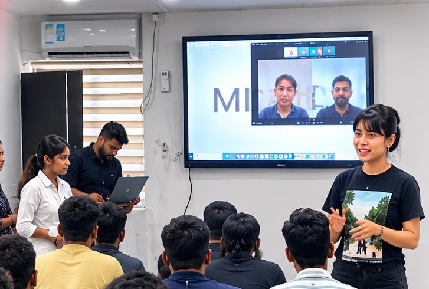

Japanese ability, proven by exams試験で証明する日本語力
Students study script, vocabulary, grammar and listening step by step, aiming to pass JLPT N5 / N4 and JFT-Basic.
JLPT N5・N4、JFT-Basic の合格を目標に、文字・語彙・文法・聴解を体系的に学習します。
Your Gateway to Japan 日本への扉を、ここから。
Start your Japanese language journey with Misaki Japanese Academy. We provide quality Japanese language education, examination preparation, student guidance and career-oriented training to help students prepare for future opportunities in Japan.
ミサキ日本語アカデミーで、日本語の学びを始めましょう。質の高い日本語教育、試験対策、学習サポート、キャリアを見据えた指導で、日本での未来に備える学生を支えます。
Learn Japanese. Gain Confidence. Build Your Future. 日本語を学び、自信をつけ、未来をひらく。
01人材Talent
Not only language ability, but the attitude that earns trust in a Japanese workplace. Our students build four strengths before they leave for Japan.
語学力だけでなく、日本の職場で信頼される姿勢まで。ミサキの学生は、次の四つの力を身につけて日本を目指します。
Students study script, vocabulary, grammar and listening step by step, aiming to pass JLPT N5 / N4 and JFT-Basic.
JLPT N5・N4、JFT-Basic の合格を目標に、文字・語彙・文法・聴解を体系的に学習します。
Our spoken-Japanese course drills the exchanges that matter every day at work: greeting, reporting, asking and confirming.
会話コースで、あいさつ・報告・質問・確認など、日常と職場で必要なやり取りを繰り返し練習します。
Punctuality, courtesy, teamwork. Japanese culture, discipline and values are part of how we teach every class.
時間厳守、礼儀、チームワーク。日本の文化・規律・価値観を、日々の授業の中で伝えています。
We provide consultancy for SSW, student and engineer visas, guiding each student from paperwork to departure.
特定技能・留学・技術ビザのコンサルティングを行い、書類準備から渡航まで伴走します。
Misaki Japanese Academy is a Japanese language education and career preparation institute based in Ambalangoda, Sri Lanka.
ミサキ日本語アカデミーは、スリランカ・アンバランゴダを拠点とする日本語教育・キャリア準備機関です。
Our academy is dedicated to providing quality Japanese language education and practical learning opportunities for students who wish to develop their Japanese language skills and explore future opportunities in Japan.
日本語力を伸ばし、日本での将来の可能性を広げたい学生のために、質の高い日本語教育と実践的な学びの機会を提供しています。
We focus on Japanese language proficiency, examination preparation, cultural understanding and career-oriented guidance.
日本語能力の向上、試験対策、文化理解、そしてキャリアを見据えた指導に力を入れています。
Through experienced teaching, structured learning programmes and student-focused support, we aim to help our students take confident steps towards their future.
経験豊かな指導、体系的な学習プログラム、学生に寄り添うサポートを通じて、一人ひとりが自信を持って未来へ踏み出せるよう支えます。
Our goal is to make Japanese language education accessible and meaningful for everyone who dreams of building a future connected with Japan.
私たちの目標は、日本とつながる未来を夢見るすべての人に、身近で意義ある日本語教育を届けることです。
使命Mission
展望Vision
We aim to send out people who combine language skills with character, and to contribute to the future of both countries.
語学力と人間力を兼ね備えた人材を送り出し、両国の未来に貢献することを目指しています。

Japanese language basics, Hiragana, Katakana, vocabulary, grammar, reading and listening.日本語の基礎、ひらがな・カタカナ、語彙、文法、読解、聴解。
Improve Japanese communication, grammar, vocabulary and reading skills.日本語でのコミュニケーション、文法、語彙、読解力を伸ばします。
Practical Japanese communication and examination preparation for students interested in the SSW pathway.特定技能を目指す学生のための、実践的な日本語と試験対策。
Japanese language, workplace communication, mock examinations and interview preparation.日本語、職場でのコミュニケーション、模擬試験、面接対策。
Develop speaking, listening and everyday communication skills.話す・聞く力と、日常のコミュニケーション力を養います。
Japanese language preparation and guidance for students interested in studying in Japan.日本留学を希望する学生のための日本語準備と進路ガイダンス。
At Misaki Japanese Academy, we provide educational and career preparation services designed to support students at every stage of their Japanese language journey.
ミサキ日本語アカデミーでは、日本語学習のあらゆる段階で学生を支える、教育とキャリア準備のサービスを提供しています。
Structured Japanese language programmes from beginner to elementary levels.
入門から初級まで、体系的な日本語プログラム。
Focused preparation for Japanese Language Proficiency Test examinations.
日本語能力試験に向けた集中対策。
Practical language training and mock examinations for JFT-Basic candidates.
JFT-Basic 受験者のための実践的な語学トレーニングと模擬試験。
Japanese language training, industry-related preparation and interview practice for students interested in Japan's Specified Skilled Worker programme.
特定技能制度を目指す学生への日本語指導、業種別の準備、面接練習。
02流れProcess
Five clear steps. You can meet candidates online before making any decision.
五つのステップで進みます。ご判断の前に、オンラインで候補者と直接お話しいただけます。

Tell us the role, the number of people and the Japanese level you need.
募集職種・人数・求める日本語レベルなど、ご要望をお聞かせください。
We introduce students whose level, character and goals match your requirements.
日本語レベル・人柄・目標がご要望に合う学生をご紹介します。
Meet candidates face to face over video, connected live from our classroom in Ambalangoda.
アンバランゴダの教室と御社をビデオ通話でつなぎ、候補者と直接お話しいただけます。
The academy supports the visa process on the student's side: SSW, student or engineer.
特定技能・留学・技術ビザなど、学生側の手続きを学院がサポートします。
Students keep studying Japanese right up to departure, and arrive prepared.
出発の日まで日本語学習を継続。しっかり準備を整えて日本へ向かいます。